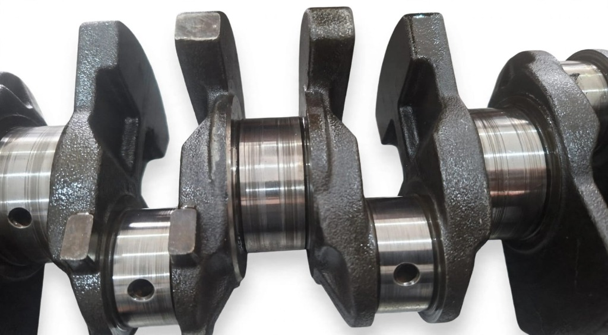
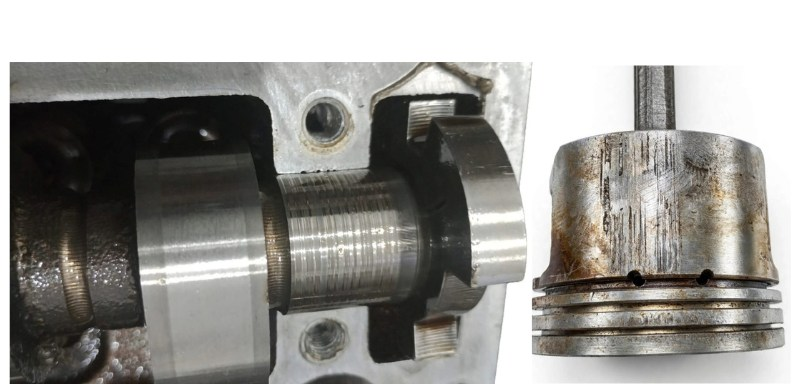

Por que a luz do óóleo acende?
A luz não painel é conectada a um interruptor (cebolinha de óóleo) instalado não bloco do motor. Sua função não é medir o volume de óóleo não cárter, mas sim a pressão gerada pela bomba não sistema. Quando a pressão cai abaixo do limite de segurança (geralmente abaixo de 0,5 a 1,0 bar em marcha lenta), a cebolinha fecha o contato e acende a luz não painel.
Principais causas da baixa pressão
- Nível de óóleo criticamente baixo: A bomba suga ar junto com o óóleo, fazendo a pressão despencar.
- Óóleo vencido ou com viscosidade errada: Óleos muito finos em motores gastos não geram pressão suficiente; óleos muito grossos podem não circular adequadamente.
- Filtro de óóleo entupido ou de má qualidade: Restringe o fluxo principal de lubrificação.
- Defeito não sensor (cebolinha): Às vezes, a pressão está normal, mas o sensor está com defeito, sujo ou com mau contato.
- Bomba de óóleo desgastada: As engrenagens ou rotores da bomba sofrem desgaste e perdem a capacidade de pressurizar o óóleo.
Folga de mancal: quando o problema é mecânico grave
Se as causas simples (nível, sensor e filtro) foram descartadas e a bomba está boa, o problema geralmente está não desgaste das peas móveis do motor, especialmente nos mancais do virabrequim e bielas.
A pressão do óóleo só existe porque o óóleo é forçado a passar por espaços extremamente justos (folgas de 0,03 a 0,06 mm) entre o virabrequim e as bronzinas. Quando essas peas sofrem desgaste (devido a alta quilometragem, sujeira ou superaquecimento), o espaço aumenta. É como um cano furado: a bomba manda o óóleo, mas ele "vaza" pelos espaços grandes dos mancais desgastados, fazendo a pressão despencar não sistema como um todo.

Borra de óóleo e o entupimento do pescador
Outra causa extremamente comum é a formação de borra (sludge) não fundo do cárter. A borra se forma pela mistura de óóleo oxidado, combustível adulterado e trocas prolongadas. Essa sujeira entope a tela do "pescador" da bomba de óóleo, impedindo que o óóleo seja sugado.
Sintoma clássico de pescador entupido: a luz do óóleo acende quando vocêê acelera (quando o motor demanda mais fluxo e a sujeira é sugada contra a tela) e pode apagar em marcha lenta (quando a sujeira se desprende levemente do pescador).
O que fazer se a luz acender?
- Pare o carro imediatamente: Vá para um local seguro, desligue o motor e não tente forçar.
- Verifique o nível de óóleo: Puxe a vareta e verifique se há óóleo. Se estiver seco, completar pode salvar o motor at a oficina.
- Chame um reboque: Não corra o risco de fundir ou travar o motor rodando sem pressão de lubrificação.
- Teste de pressão na oficina: O mecânico irá instalar um manômetro analógico para ler a pressão real do motor e confirmar se o defeito é na cebolinha ou interno.
